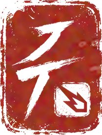

Font Name
Masters
settings
.
Customize detailed font generation settings, including multilingual support, grid structures, and other advanced options.
Language Support
Grid
profile
.
Current settings.
Be sure.
Import Your Project
Start Creating
Pick a country → auto-select its sets…
▾

glyphs
.
modification
.
testing
.
save
.
Import Glyph to Illustrator
+ Alternate
+ Ligature
+ Accents
Assign Shape
Auto Fit All
Auto Fit Selected
Auto Kern
Optimize
Go to Glyph
Size
Track
Optical
Optical
Metric
Lazy fox jumps over the brown dog.
signature
.
export
.
OTF
TTF
soon
Variable
soon
Save Project (.runetype)
Open File
Export to Folder